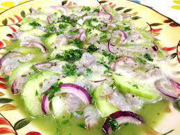
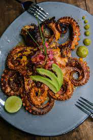
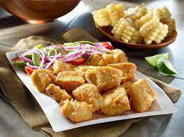
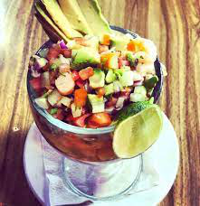
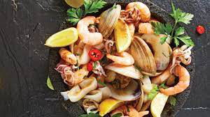

Aguachile
Ingredientes
- 30 camarones crudos
- 1 taza de jugo de limon
- 2 chiles serranos
- 1 pepino en rodajas
- 1/4 de cebolla morda en medias rodajas
- Sal al gusto
- Pimienta al justo
- 2 cuchardas de cilantro picado
Elaboración paso a paso
- Pela y desvena los camarones, córtalos en mariposa y reserva en el refrigerador.
- Licúa jugo de limón con el chile serrano, que quede bien licuado.
- El pepino, con cáscara o sin ella, corta las rebanadas delgadas y exactas para cada camarón
(24 o 30). Pica la cebolla morada en julianas, delgadas.
- En un platón grande, o si tienes un molcajete grande, coloca intercaladamente el pepino y
camarón. Agrega cebolla, sal, pimenta y baña todo con la mezcla de limón y chile serrano.
Decorar con el cilantro.

Pulpo Zarandeado

Ingredientes
- Un pulpo
- 6 hojas de laurel seco
- 3 dientes de ajo
- 1/2 Cebolla
- Aceite de Oliva
- Para el adobo
- 300 ml de Jugo de Naranja
- 8 Chiles de Arbol secos
- 1 Chile Pasilla seco
- 5 Chiles Mirasol (Guajillo) secos
- 1 cda Jugo Sazonador
- 1 cda Salsa Inglesa
- 1 cda Salsa Picante
- 1 cda de mostaza dijon
- 3 dientes de ajo picado
- 1/2 de cebolla blanca picada
- 1/2 barra de Mantequilla
- Sal y Pimienta
Elaboración paso a paso
- En agua hirviendo pon a cocer el pulpo por 35-40mins junto con el laurel, ajo y cebolla.
- En una sarten coloca los chiles secos calienta y agrega el jugo de naranja. Espera a que
hierva, licua y cuela en un bowl.
- En una sarten coloca la mantequilla con la cebolla y el ajo hasta que la cebolla tenga un
color translúcido, agrega la pasta de chiles y el resto de los ingredientes. Revuelve bien.
- Ya cocido el pulpo, untale el adobo y colócalo en la parrilla 3 mins de cada lado.
Chicharron de pescado
Ingredientes
- 1 kilo de pescado, en trozos
- 1/2 tazas de aderezo italiano
- 1/4 tazas de jugo de limón
- 1 taza de harina
- 1 cucharadita de pimienta negra
- 1 cucharadita de chile en polvo
- 2 tazas de aceite de maíz
- Sal, y pimienta al gusto
Elaboración paso a paso
- Mezclar el aderezo, sal, pimienta y el jugo de limón en un tazón . Agregar el pescado en
trozos y cubrir bien, refrigerar tapado durante 1 hora para marinar. Sacar, escurrir y
deshechar la marinada.
- Mezclar la harina, la pimienta y el chile en polvo en otro tazón, ir agregando poco a poco
el pescado en trozos cubriéndolos por todos lados y colocar en un plato grande.
- Calentar el aceite en un sartén grande, agregar por tandas los trozos de pescado, cocinar de
12 a 15 minutos hasta que estén bien dorados y se cocinen por completo. Pasar el pescado ya
cocinado en un molde para hornear, cubrir con papel aluminio y calentar en el horno por 10
min antes de servir.

Coctel de mariscos

Ingredientes
- 250 g de camarón con cáscara 200 gr pulpa
- 100 gr de ostiones en su jugo
- 250 gr de salsa cátsup
- 100 gr de pulpa de jaiba
- 100 gr de calamar cocido o pulpo cocido
- 100gr de jitomate
- 50gr de cilantro
- 100 gr de cebolla morada
- 5 gr de orégano
- 5 ml de jugo sazonador Maggi
- 100 ml limón
- 50 gr aguacate
- Cantidad necesaria de sal
- Cantidad necesaria de pimienta
- Galletas saladas para acompañar
Elaboración paso a paso
- Lava y pela el camarón; reserva la pulpa. Las cascaras ponlas en agua a hervir, agrega un poco de orégano, sal, pimienta y deja que el agua reduzca a un tercio, en esa misma agua hirviendo pon a cocer la pulpa de camarón no más de un minuto, pues reducirán su tamaño y perderán las propiedades que queremos obtener. Cuela el agua de la cascara de camarón, sazona y déjala enfriar. Receta coctel de mariscos vuelve a la vida.
- En una copa grande como la de la imagen agrega primero los productos de mar, camarón, ostión con todo y caldito, el calamar o el pulpo, la pulpa de jaiba. Después de esto agrega el jugo de limón y el jugo Maggi; como siguiente paso, agrega la salsa cátsup y después agrega una taza del caldito de la cascara de camarón y mezcla.
- Rellena con el caldito de camarón la copa y al final agrega jitomate, cebolla morada y cilantro cortado en cuadritos, decora con aguacate y algunos camarones, si te gusta el picante puedes agregar salsa de habanero o la que gustes. Acompaña con limón y galletas saladas.
Molcajete de mariscos
Ingredientes
- 2 cucharadas de aceite de oliva, para la salsa
- 2 cucharadas de chile piquín, para la salsa
- 2 cucharadas de chile de árbol, para la salsa
- 1 chile jalapeño, para la salsa
- 1/2 tazas de jugo de limón, para la salsa
- 1/4 tazas de jugo de tomate, para la salsa
- 1 cucharada de salsa maggi, para la salsa
- 500 gramos de camarón, sin cáscara y limpios
- 300 gramos de filete de tilapia, cortada en cubos
- suficiente de aguacate, para decorar
- suficiente de tostada de maíz, para presentar
Elaboración paso a paso
- En un comal a fuego medio calienta el aceite y fríe los chiles cuidando que no se quemen, retira y enfría ligeramente.
- En un molcajete, machaca los chiles uno a uno agregando el jugo de limón, el jugo de tomate y la salsa maggi hasta obtener una salsa. Añade los camarones, el filete de tilapia, la cebolla morada, el pepino, el cilantro, mezcla y sazona con sal y pimienta. Marina alrededor de 20 minutos o hasta que los camarones y el pescado cambien de color.
- Decora con camarones pacotilla y pepinos alrededor del molcajete, acompaña con aguacate y tostadas de maíz.
